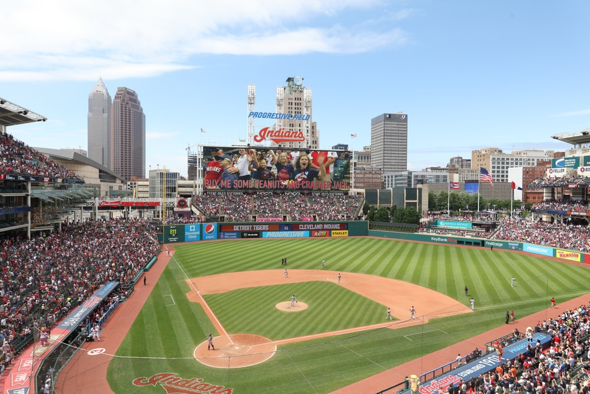

Major League Baseball: Day Games vs. Night Games
In this project, our team set out to examine Major League Baseball statistics to determine whether day or night games favor the pitchers (defense) or batters (offense). We contrasted the earned run average (ERA) of pitchers and batting average of hitters (AVG) across all 2,430 games played in the 2019 baseball regular season to see if the sun and shadows favored one side of the other.
We have included visualizations of the results of our analysis, as well as an interactive map showing the locations of all MLB stadiums across the country.
